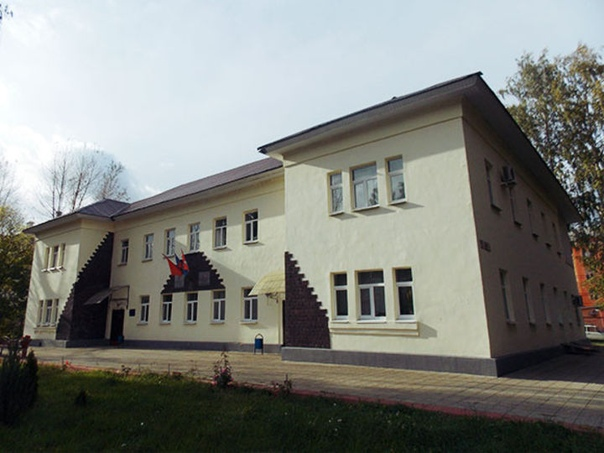
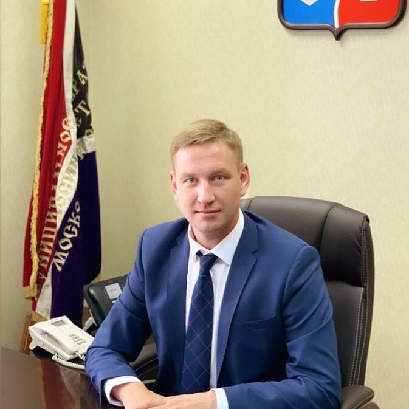

Мы рады приветствовать Вас на сайте администрации городского округа Лосино-Петровский Московской области. Этот сайт создан для того,
чтобы облегчить процедуру поиска и сбора данных

адрес: 141150, Московская обл., г. Лосино-Петровский, ул. Ленина, д. 3
телефон: (496) 567-43-18 (приёмная), (496) 567-42-46
e-mail: lospet@mosreg.ru
ОГРН
1035010208441
от 27 марта 2003 г.
ИНН/КПП
5050010740
505001001
Дата регистрации
30.12.1991
Руководитель
Курданин Иван Юрьевич
Правопредшественники
УСАЗИЭ, УПСВ Администрации Г.Лосино-Петровский

Курданин Иван Юрьевич
Глава городского округа Лосино-Петровский
Телефон: 8 (496) 567-43-18
E-Mail: kurdanin@lospet.ru
Адрес: 141150, Московская обл., г.Лосино-Петровский,ул.Ленина, д.3
Максимов Илья Александрович
Должность: Первый заместитель главы
Телефон: 8 (496) 567-43-18
E-Mail: lospet@mosreg.ru
Адрес: 141150, Московская обл., г.Лосино-Петровский,ул.Ленина, д.3
Алексеева Вера Анатольевна
Должность: Заместитель главы
Телефон: 8 (496) 567-43-18
E-Mail: lospet@mosreg.ru
Адрес: 141150, Московская обл., г.Лосино-Петровский,ул.Ленина, д.3
Матрёничев Сергей Александрович
Должность: Заместитель главы
Телефон: 8 (496) 567-41-69
E-Mail: lospet@mosreg.ru
Адрес: 141150, Московская обл., г.Лосино-Петровский,ул.Ленина, д.3
Полякова Марина Николаевна
Должность: Заместитель главы
Телефон: 8 (496) 567-43-18
E-Mail: lospet@mosreg.ru
Адрес: 141150, Московская обл., г.Лосино-Петровский,ул.Ленина, д.3
Лабазин Андрей Андреевич
Должность: Заместитель главы
Телефон: 8 (496) 567-43-18
E-Mail: lospet@mosreg.ru
Адрес: 141150, Московская обл., г.Лосино-Петровский,ул.Ленина, д.3
Косолапов Василий Михайлович
Должность: Заместитель главы
Телефон: 8 (496) 567-43-18
E-Mail: lospet@mosreg.ru
Адрес: 141150, Московская обл., г.Лосино-Петровский,ул.Ленина, д.3